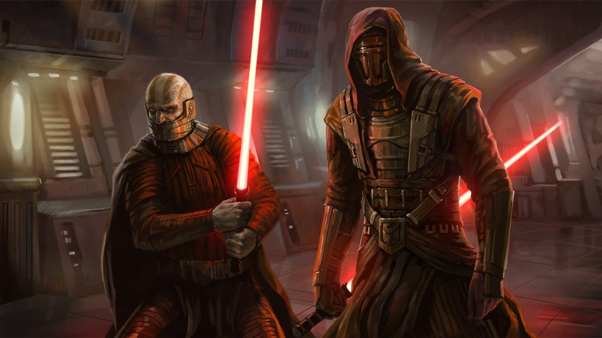

Вторая война ситхов
«В этой войне — настоящей войне, — сражения идут не между дроидами, боевыми кораблями или легионами солдат. Всё это лишь грубая форма преград, испытаний на нашем жизненном пути. Настоящая война идёт в сердцах всех живых существ, против их собственной природы, война света и тьмы»
Вторая война ситхов, также известная как Кризис Старой Республики и Война «Звёздной кузницы» — война между Галактической Республикой и Империей ситхов Дарта Ревана, длившаяся с 3959 по 3956 ДБЯ, один из крупнейших конфликтов периода Старых войн ситхов. Рыцарь-джедай Реван был Верховным главнокомандующим Республиканских вооружённых сил во время Мандалорских войн и привёл Республику к победе над мандалорцами, но затем отрёкся от учений джедаев и избрал путь Тёмной стороны; за ним последовали его многочисленные соратники, разочаровавшиеся в Ордене джедаев и Республике после Мандалорских войн. Угроза истинных ситхов, затаившихся в Неизведанных Регионах, побудила Дарта Ревана приступить к строительству собственной галактической Империи, способной устоять перед предстоявшим вторжением. Спасением Республики в видении Ревана могло быть лишь полное её поглощение новообразованной Империей ситхов, и в 3959 ДБЯ силы Дарта Ревана неожиданно вторглись в республиканское пространство.
На начальных этапах войны Дарт Реван одержал ряд ключевых побед, в результате чего положение Республики к 3957 ДБЯ было катастрофическим: армада ситхов захватила Внешнее Кольцо и Центральные Миры и неумолимо приближалась к Корусанту, в то время как Республиканский флот был практически полностью уничтожен. Главную роль в столь стремительном продвижении ситхов сыграла «Звёздная кузница», беспрестанно обеспечивавшая ситхский флот новейшими боевыми кораблями. В отчаянии джедаи в 3957 ДБЯ устроили ловушку для Дарта Ревана, но хотя им и удалось захватить Тёмного повелителя, ближайший сподвижник Ревана Дарт Малак занял его место во главе Империи ситхов, и война приобрела ещё более ожесточённый характер: Малак, в отличие от своего предшественника, стремился не сохранить Республику, а как можно скорее уничтожить её. Совет джедаев стёр память Дарта Ревана, заменив её ложными воспоминаниями, а позже начал вновь обучать его в качестве джедая, чтобы тот смог найти таинственное оружие ситхов. Пока Реван путешествовал по галактике в поисках звёздных карт, Малак нанёс сокрушительный удар по Ордену джедаев, напав на Дантуин и уничтожив Анклав джедаев. После обнаружения Реваном Кузницы Республиканский флот сошёлся с флотом ситхов в финальной битве при Раката-Прайм. Реван сразил Малака на борту «Звёздной кузницы», после чего ситхский флот был разгромлен, а сама станция уничтожена. По окончании Гражданской войны джедаев Империя ситхов погрузилась в хаос, а Республика — в глубочайший кризис.
Где это было?


Появление правила двух и истребление Ордена ситхов
«Когда твоя сила затмит мою, мною можно будет пожертвовать. Это Правило двух: один учитель и один ученик. Когда ты будешь готова стать лордом ситхов, тебе придется уничтожить меня»
Чтобы избежать, казалось бы, неизбежной жажды власти у ситхов, Дарт Бэйн стремился создать новый Орден ситхов, в который входили бы только мастер и ученик. Бэйн разработал прототип правила двух после открытия голокрона в Храме древних на Лехоне. Голокрон ситхов принадлежал древнему лорду ситхов — Дарту Ревану, который собрал его во время своего первого пребывания на Лехоне в 3959 ДБЯ. В этом голокроне Реван говорил о недостатке в обучении более одного ученика.
Бэйн понял из голокрона, что в древние времена ученики искали способы уничтожить своих мастеров и присвоить их титулы. Соединяя свои более слабые силы воедино, они могли победить своего сильного мастера. Без мастера достаточно сильного, чтобы удерживать своих учеников, они боролись друг с другом за власть, ради получения которой они объединялись. В конце концов новый мастер-ситх будет слабее старого. Этот процесс будет повторяться, оставляя после себя более слабого, чем предыдущий, мастера. Хотя в Ситхской империи Ревана были академии ситхов, которые тренировали множество ситхов, было лишь два истинных лорда ситхов: Дарт Реван и Дарт Малак. Так было и в более древней империи ситхов Экзара Куна и Улика Кель-Дромы, хотя Кун тренировал много учеников одновременно. Поняв философию Дарта Ревана, Бэйн решил прекратить ситхские междоусобицы и преобразовать существующий орден ситхов в новый, в котором будут только учитель и ученик. Бэйн уничтожил старый орден ситхов — Братство Тьмы, обманув лорда Каана и вынудив его использовать ментальную бомбу, которая убила всех членов ордена, кроме Бэйна. Потом Бэйн скрыл от джедаев правило двух.
Где это было?


Битва при Явине
«Любая атака на станцию, предпринятая мятежниками, будет самоубийством, бесполезным жестом отчаяния»
Битва при Явине — крупная битва Галактической гражданской войны, приведшая к уничтожению первой «Звезды Смерти». Она стала настолько знаковым событием в борьбе с Империей, что в последствии Новая Республика при создании стандартного галактического календаря примет ее за начало нового летоисчисления.
В результате этой битвы Альянс повстанцев обрел доверие как достойный оппонент Империи. В период после уничтожения «Звезды Смерти» и до роспуска Имперского Сената тысячи звездных систем открыто поддержали Альянс. Вследствие этого Империя начала оккупацию миров, ранее оставленные нетронутыми, что привело к эскалации конфликта.
Пару месяцев спустя после Битвы у Явина Империя предприняла несколько коротких атак на спутник Явина, пытаясь уничтожить ядро Восстания. Эти атаки осуществлялись небольшими эскадрильями TIE-истребителей, вылетавших с небольшой базы в системе Явин. Они обычно выполняли патрульные миссии, а не наносили ответные удары. Альянс повстанцев был вынужден эвакуироваться с Явина, опасаясь нападения имперского флота, и в конце концов обосновался на Хоте. Последний рейд Империи стал массированным штурмом, включавшим блокаду планеты и высадку крупных наземных сил при поддержке TIE-истребителей и AT-ST. Генерал Додонна, возглавлявший оборону Явина, не смог спастись, был захвачен имперскими войсками и позднее заключен в тюрьму.
Кампания Трауна
«История приходит в движение, капитан. Те, кто не могут идти с ней в ногу, останется далеко позади. Их удел — наблюдать издалека. Тот, кто встанет у нас на пути, смотреть не будут совсем»
Кампания Трауна, также известная как кризис Трауна, была рядом новаторских военных и политических маневров, выполненных имперским гранд-адмиралом Трауном в 9 ПБЯ. Эта кампания стала первым полномасштабным наступлением Империи со времён битвы при Эндоре. Атаки, отвлекающие маневры и политика Трауна создали первый основной внутренний и внешний конфликт для Новой Республики, и чиссу почти удалось уничтожить молодое государство.
Траун уже тогда начал разрабатывать великую стратегию, чтобы победить Новую Республику и восстановить имперскую власть. Хотя многие детали этой стратегии были неясны, известно лишь, что она включала подробную кампанию на ближайшие пять лет, и что гранд-адмирал считал, что его силы в Неизведанных Регионах могли стать ключевыми для окончательной победы Империи. Эта стратегия учитывала политические балансы и факторы, культурные и психологические недочёты и сильные места, исторические свары и вражду между народами, которые можно было использовать вне зависимости от времени. В течение всего шести месяцев с момента начала своей кампании Траун распространил власть Империи на половину известной Галактики, удвоив площадь имперских владений и выявив существенные слабости Новой Республики. Гений и харизма Трауна были единственными реальными преимуществами Империи. Без них Империя скоро вновь начала распадаться, только гранд-адмиралу удалось собрать осколки в единое целое.
Где это было?
Юужань-вонгская война
«Я участвовал в худшей из всех войн и был свидетелем искупления зла. Я видел, как в Силе восстановился баланс. Но порядок может превратиться в хаос… как это было, когда я родился. Теперь, с моими близкими и моими верными союзниками, я столкнулся с новой угрозой, не похожей ни на одну из предыдущих. И я не уверен, что на этот раз мы сможем победить»
Юужань-вонгская война, также известная как Великая война, — общегалактический конфликт, который возник, когда юужань-вонги, воинственная раса, уже давно покинувшая свою собственную разрушенную галактику, вторглись во Внешнее Кольцо.
Плохо подготовленное и неэффективное правительство главы государства Борска Фей'лии было неспособно помешать юужань-вонгам неумолимо двигаться к Центру. Корусант, галактическая столица, была захвачена и подвергнута терраформированию спустя два года после начала вторжения. К этому времени бесчисленные расы оказались на грани вымирания, и целые планеты стали непригодны для проживания.
Использовавшие передовые биотехнологии во всех областях жизни, юужань-вонги были мастерами адаптации и уловок, так же как грубой силы и тактики террора. Вера, что вторжение было предопределено богами и что эта Галактика принадлежала им по праву, была подкреплена верховным повелителем Шимррой Джамаане и кастой жрецов, посредниками между юужань-вонгами и богами. Таким образом, эта раса напала с ожесточением, но их вторжение, руководимое мастером войны Цавонгом Ла, перенапрягло себя. Вендетта против Нового Ордена джедаев Люка Скайуокера, движение еретиков, популярное среди низших каст, а также слухи, что их давно уничтоженный родной мир появился в Неизведанных Регионах, были лишь некоторыми из факторов, которые вызвали кризис Юужань-вонгской империи. Вскоре после стремительного наступления между Новой Республикой и юужань-вонгами возник технологический паритет. Как только Новая Республика оправилась от потери своей столицы, юужань-вонги потерпели сокрушительное поражение на Эбаке-9.
Охваченная внутренней напряженностью, Юужань-вонгская империя была ещё в состоянии нейтрализовать многие из угроз, стоявших перед ней, в том числе йевет и сси-руук, прежде чем снова перейти в наступление. Новая Республика, реформированная альдераанским главой государства Кэлом Омасом в Галактическую Федерацию Свободных Альянсов, была доведена до грани поражения. Тогда в ответ на новое вонгское наступление на свою временную столицу на Даке Галактический Альянс перешёл к роковому распространению «Альфы-Красной», болезнетворного микроорганизма, губительного для юужань-вонгов. Это опасный конец войны был предотвращён Зонамой-Секот, семенем потерянного родного мира юужань-вонгов, появившейся над Корусантом, чьё прибытие ускорило заключительное сражение конфликта. Скайуокер и другие ведущие джедаи, которые находились на Зонаме-Секот и убедили её вернуться, во время битвы победили Шимрру Джамаане и настоящего главу юужань-вонгов — Оними, в то время как флоты боевых кораблей столкнулись ещё раз в космосе. Юужань-вонгская война закончилась гибелью верховного повелителя и капитуляцией армады мастера войны Нас Чоки. Секотские соглашения, установленные при этом, предусматривали разоружение и амнистию для юужань-вонгов и оказались крайне непопулярными. И юужань-вонги, и последствия их разрушительной войны сыграли важную роль в последующих событиях.
Где это было?